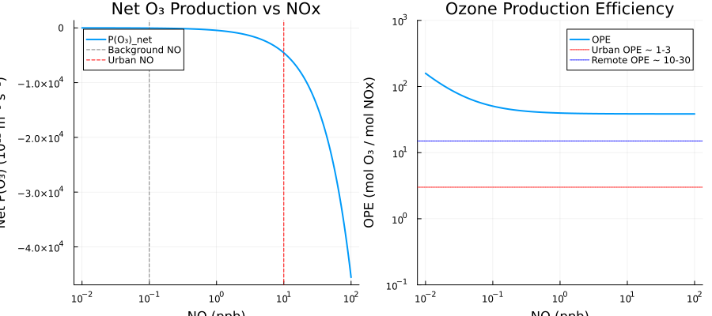

Combined System
Overview
The TroposphericChemistrySystem integrates the individual chemistry mechanisms from Chapter 6 into a comprehensive tropospheric chemistry diagnostic model. It couples:
- OH production from O3 photolysis (Section 6.1, via
OHProduction) - NOx photochemical cycle (Section 6.2, via
NOxPhotochemistry) - CO oxidation and HOx cycling (Section 6.3, via
COOxidation)
The systems are coupled through shared species (OH, HO2, NO, NO2, O3) and the combined system computes aggregate diagnostics including net O3 production, OPE, and HOx chain length.
Condition systems provide typical atmospheric conditions for different environments.
Reference: Seinfeld, J.H. and Pandis, S.N. (2006). Atmospheric Chemistry and Physics: From Air Pollution to Climate Change, 2nd Edition. John Wiley & Sons. Chapter 6.
GasChem.TroposphericChemistrySystem — Function
TroposphericChemistrySystem(; name)Combined ModelingToolkit System for tropospheric chemistry diagnostics.
This system couples the OH production, NOx cycling, and CO/CH₄ oxidation mechanisms to create a comprehensive diagnostic model of tropospheric photochemistry.
Key coupling points:
- OH is produced from O₃ photolysis and HO₂ + NO reaction
- OH is consumed by CO, CH₄, and other species
- HO₂ is produced from CO/VOC oxidation
- HO₂ is lost to NO (producing OH) and self-reaction
- NOx cycles between NO and NO₂ through O₃ and peroxy radicals
- O₃ is produced when peroxy radicals oxidize NO to NO₂
Subsystem Composition:
oh: OHProduction subsystem (Section 6.1)nox: NOxPhotochemistry subsystem (Section 6.2)co: COOxidation subsystem (Section 6.3)
Input Variables
All species concentrations must be provided as inputs [m⁻³].
Diagnostic outputs:
- PO3net: Net ozone production rate [m⁻³ s⁻¹]
- OPE: Ozone production efficiency [dimensionless]
- HOx: Total HOx (OH + HO₂) [m⁻³] # =========================================================================
- chain_length: HOx chain length [dimensionless] # Subsystems (composed from individual component functions)
GasChem.TypicalConditions — Function
TypicalConditions(; name)ModelingToolkit System representing typical lower troposphere conditions.
All concentrations are parameters in SI units (m⁻³).
Based on values from Seinfeld & Pandis Chapter 6.
GasChem.UrbanConditions — Function
UrbanConditions(; name)ModelingToolkit System representing typical urban conditions with elevated NOx.
All concentrations are parameters in SI units (m⁻³).
GasChem.RemoteConditions — Function
RemoteConditions(; name)ModelingToolkit System representing typical remote/background conditions with low NOx.
All concentrations are parameters in SI units (m⁻³).
GasChem.get_conditions_dict — Function
get_conditions_dict(sys)Helper to extract default parameter values from a conditions System as a Dict{Symbol,Float64}. This is a convenience function for use in tests and analysis code.
Implementation
State Variables
using DataFrames, ModelingToolkit, Symbolics, DynamicQuantities, GasChem
sys = TroposphericChemistrySystem()
vars = unknowns(sys)
DataFrame(
:Name => [string(Symbolics.tosymbol(v, escape = false)) for v in vars],
:Units => [dimension(ModelingToolkit.get_unit(v)) for v in vars],
:Description => [ModelingToolkit.getdescription(v) for v in vars]
)| Row | Name | Units | Description |
|---|---|---|---|
| String | Dimensio… | String | |
| 1 | oh₊O3 | m⁻³ | Ozone concentration |
| 2 | O3 | m⁻³ | Ozone |
| 3 | oh₊H2O | m⁻³ | Water vapor concentration |
| 4 | H2O | m⁻³ | Water vapor |
| 5 | oh₊M | m⁻³ | Total air number density |
| 6 | M | m⁻³ | Total air density |
| 7 | nox₊NO | m⁻³ | NO concentration |
| 8 | NO | m⁻³ | Nitric oxide |
| 9 | nox₊NO2 | m⁻³ | NO₂ concentration |
| 10 | NO2 | m⁻³ | Nitrogen dioxide |
| 11 | nox₊O3 | m⁻³ | O₃ concentration |
| 12 | nox₊O2 | m⁻³ | O₂ concentration |
| 13 | O2 | m⁻³ | Molecular oxygen |
| 14 | nox₊M | m⁻³ | Total air number density |
| 15 | co₊CO | m⁻³ | CO concentration |
| 16 | CO | m⁻³ | Carbon monoxide |
| 17 | co₊OH | m⁻³ | OH concentration |
| 18 | OH | m⁻³ | Hydroxyl radical |
| 19 | co₊HO2 | m⁻³ | HO₂ concentration |
| 20 | HO2 | m⁻³ | Hydroperoxy radical |
| 21 | co₊NO | m⁻³ | NO concentration |
| 22 | co₊NO2 | m⁻³ | NO₂ concentration |
| 23 | co₊O3 | m⁻³ | O₃ concentration |
| 24 | NOx | m⁻³ | Total NOx |
| 25 | HOx | m⁻³ | Total HOx |
| 26 | RO2 | m⁻³ | Total organic peroxy radicals |
| 27 | CH3O2 | m⁻³ | Methylperoxy radical |
| 28 | P_O3_total | m⁻³ s⁻¹ | Total O₃ production |
| 29 | L_O3_total | m⁻³ s⁻¹ | Total O₃ loss |
| 30 | P_O3_net | m⁻³ s⁻¹ | Net O₃ tendency |
| 31 | L_NOx | m⁻³ s⁻¹ | NOx loss rate |
| 32 | OPE | Ozone production efficiency (dimensionless) | |
| 33 | chain_length | HOx chain length (dimensionless) | |
| 34 | co₊chain_length | HOx chain length (dimensionless) | |
| 35 | oh₊O1D | m⁻³ | O(¹D) steady-state concentration |
| 36 | oh₊O3 | m⁻³ | Ozone concentration |
| 37 | oh₊M | m⁻³ | Total air number density |
| 38 | oh₊H2O | m⁻³ | Water vapor concentration |
| 39 | oh₊ε_OH | OH yield fraction (dimensionless) | |
| 40 | oh₊P_OH | m⁻³ s⁻¹ | OH production rate |
| 41 | nox₊O | m⁻³ | O atom concentration |
| 42 | nox₊NO2 | m⁻³ | NO₂ concentration |
| 43 | nox₊O2 | m⁻³ | O₂ concentration |
| 44 | nox₊M | m⁻³ | Total air number density |
| 45 | nox₊O3_pss | m⁻³ | Photostationary state O₃ |
| 46 | nox₊NO | m⁻³ | NO concentration |
| 47 | nox₊Φ | Photostationary state parameter (dimensionless) | |
| 48 | nox₊O3 | m⁻³ | O₃ concentration |
| 49 | nox₊P_O3 | m⁻³ s⁻¹ | Net O₃ production rate |
| 50 | co₊L_OH | m⁻³ s⁻¹ | OH loss rate |
| 51 | co₊OH | m⁻³ | OH concentration |
| 52 | co₊CO | m⁻³ | CO concentration |
| 53 | co₊NO2 | m⁻³ | NO₂ concentration |
| 54 | co₊O3 | m⁻³ | O₃ concentration |
| 55 | co₊L_HO2 | m⁻³ s⁻¹ | HO₂ loss rate |
| 56 | co₊HO2 | m⁻³ | HO₂ concentration |
| 57 | co₊NO | m⁻³ | NO concentration |
| 58 | co₊L_HOx | m⁻³ s⁻¹ | HOx loss rate |
| 59 | co₊HO2_ss | m⁻³ | HO₂ steady-state (high NOx) |
| 60 | co₊P_O3 | m⁻³ s⁻¹ | Net O₃ production rate |
| 61 | co₊chain_length | HOx chain length (dimensionless) |
Parameters
params = parameters(sys)
DataFrame(
:Name => [string(Symbolics.tosymbol(p, escape = false)) for p in params],
:Units => [dimension(ModelingToolkit.get_unit(p)) for p in params],
:Description => [ModelingToolkit.getdescription(p) for p in params]
)| Row | Name | Units | Description |
|---|---|---|---|
| String | Dimensio… | String | |
| 1 | co₊k_HO2_NO | m³ s⁻¹ | HO₂ + NO rate constant (8.1e-12 cm³/molec/s) |
| 2 | k_CH3O2_NO | m³ s⁻¹ | CH₃O₂ + NO rate constant (7.7e-12 cm³/molec/s) |
| 3 | nox₊k_NO_O3 | m³ s⁻¹ | NO + O₃ → NO₂ rate (1.9e-14 cm³/molec/s, p. 211) |
| 4 | co₊k_HO2_O3 | m³ s⁻¹ | HO₂ + O₃ rate constant (2.0e-15 cm³/molec/s) |
| 5 | co₊k_OH_O3 | m³ s⁻¹ | OH + O₃ rate constant (7.3e-14 cm³/molec/s) |
| 6 | co₊k_OH_NO2 | m³ s⁻¹ | OH + NO₂ + M rate constant (1.0e-11 cm³/molec/s) |
| 7 | oh₊j_O3 | s⁻¹ | O₃ photolysis rate producing O(¹D) at surface, solar zenith 0° |
| 8 | oh₊k3_O2 | m³ s⁻¹ | O(¹D) + O₂ quenching rate (4.0e-11 cm³/molec/s) |
| 9 | oh₊f_O2 | Fraction of air that is O₂ (dimensionless) | |
| 10 | oh₊k3_N2 | m³ s⁻¹ | O(¹D) + N₂ quenching rate (2.6e-11 cm³/molec/s) |
| 11 | oh₊f_N2 | Fraction of air that is N₂ (dimensionless) | |
| 12 | oh₊k4 | m³ s⁻¹ | O(¹D) + H₂O → 2OH rate (2.2e-10 cm³/molec/s) |
| 13 | oh₊two | Stoichiometric factor: 2 OH per O(¹D)+H₂O reaction (dimensionless) | |
| 14 | nox₊j_NO2 | s⁻¹ | NO₂ photolysis rate |
| 15 | nox₊k_O_O2_M | m⁶ s⁻¹ | O + O₂ + M → O₃ rate (6.0e-34 cm⁶/molec²/s) |
| 16 | co₊k_CO_OH | m³ s⁻¹ | CO + OH rate constant (2.4e-13 cm³/molec/s) |
| 17 | co₊k_HO2_HO2 | m³ s⁻¹ | HO₂ + HO₂ rate constant (2.9e-12 cm³/molec/s) |
| 18 | co₊two | Stoichiometric factor for HO₂ self-reaction (dimensionless) |
Equations
eqs = equations(sys)\[ \begin{align} \mathtt{oh.O3}\left( t \right) &= \mathtt{O3}\left( t \right) \\ \mathtt{oh.H2O}\left( t \right) &= \mathtt{H2O}\left( t \right) \\ \mathtt{oh.M}\left( t \right) &= M\left( t \right) \\ \mathtt{nox.NO}\left( t \right) &= \mathtt{NO}\left( t \right) \\ \mathtt{nox.NO2}\left( t \right) &= \mathtt{NO2}\left( t \right) \\ \mathtt{nox.O3}\left( t \right) &= \mathtt{O3}\left( t \right) \\ \mathtt{nox.O2}\left( t \right) &= \mathtt{O2}\left( t \right) \\ \mathtt{nox.M}\left( t \right) &= M\left( t \right) \\ \mathtt{co.CO}\left( t \right) &= \mathtt{CO}\left( t \right) \\ \mathtt{co.OH}\left( t \right) &= \mathtt{OH}\left( t \right) \\ \mathtt{co.HO2}\left( t \right) &= \mathtt{HO2}\left( t \right) \\ \mathtt{co.NO}\left( t \right) &= \mathtt{NO}\left( t \right) \\ \mathtt{co.NO2}\left( t \right) &= \mathtt{NO2}\left( t \right) \\ \mathtt{co.O3}\left( t \right) &= \mathtt{O3}\left( t \right) \\ \mathtt{NOx}\left( t \right) &= \mathtt{NO}\left( t \right) + \mathtt{NO2}\left( t \right) \\ \mathtt{HOx}\left( t \right) &= \mathtt{HO2}\left( t \right) + \mathtt{OH}\left( t \right) \\ \mathtt{RO2}\left( t \right) &= \mathtt{CH3O2}\left( t \right) \\ \mathtt{P\_O3\_total}\left( t \right) &= \mathtt{co.k\_HO2\_NO} ~ \mathtt{NO}\left( t \right) ~ \mathtt{HO2}\left( t \right) + \mathtt{k\_CH3O2\_NO} ~ \mathtt{NO}\left( t \right) ~ \mathtt{CH3O2}\left( t \right) \\ \mathtt{L\_O3\_total}\left( t \right) &= \mathtt{co.k\_HO2\_O3} ~ \mathtt{HO2}\left( t \right) ~ \mathtt{O3}\left( t \right) + \mathtt{co.k\_OH\_O3} ~ \mathtt{OH}\left( t \right) ~ \mathtt{O3}\left( t \right) + \mathtt{nox.k\_NO\_O3} ~ \mathtt{NO}\left( t \right) ~ \mathtt{O3}\left( t \right) \\ \mathtt{P\_O3\_net}\left( t \right) &= \mathtt{P\_O3\_total}\left( t \right) - \mathtt{L\_O3\_total}\left( t \right) \\ \mathtt{L\_NOx}\left( t \right) &= \mathtt{co.k\_OH\_NO2} ~ \mathtt{NO2}\left( t \right) ~ \mathtt{OH}\left( t \right) \\ \mathtt{OPE}\left( t \right) &= \frac{\mathtt{P\_O3\_total}\left( t \right)}{\mathtt{L\_NOx}\left( t \right)} \\ \mathtt{chain\_length}\left( t \right) &= \mathtt{co.chain\_length}\left( t \right) \\ \mathtt{oh.O1D}\left( t \right) &= \frac{\mathtt{oh.j\_O3} ~ \mathtt{oh.O3}\left( t \right)}{\mathtt{oh.k4} ~ \mathtt{oh.H2O}\left( t \right) + \left( \mathtt{oh.f\_N2} ~ \mathtt{oh.k3\_N2} + \mathtt{oh.f\_O2} ~ \mathtt{oh.k3\_O2} \right) ~ \mathtt{oh.M}\left( t \right)} \\ \mathtt{oh.\varepsilon\_OH}\left( t \right) &= \frac{\mathtt{oh.k4} ~ \mathtt{oh.two} ~ \mathtt{oh.H2O}\left( t \right)}{\mathtt{oh.k4} ~ \mathtt{oh.H2O}\left( t \right) + \left( \mathtt{oh.f\_N2} ~ \mathtt{oh.k3\_N2} + \mathtt{oh.f\_O2} ~ \mathtt{oh.k3\_O2} \right) ~ \mathtt{oh.M}\left( t \right)} \\ \mathtt{oh.P\_OH}\left( t \right) &= \mathtt{oh.j\_O3} ~ \mathtt{oh.\varepsilon\_OH}\left( t \right) ~ \mathtt{oh.O3}\left( t \right) \\ \mathtt{nox.O}\left( t \right) &= \frac{\mathtt{nox.j\_NO2} ~ \mathtt{nox.NO2}\left( t \right)}{\mathtt{nox.k\_O\_O2\_M} ~ \mathtt{nox.O2}\left( t \right) ~ \mathtt{nox.M}\left( t \right)} \\ \mathtt{nox.O3\_pss}\left( t \right) &= \frac{\mathtt{nox.j\_NO2} ~ \mathtt{nox.NO2}\left( t \right)}{\mathtt{nox.k\_NO\_O3} ~ \mathtt{nox.NO}\left( t \right)} \\ \mathtt{nox.\Phi}\left( t \right) &= \frac{\mathtt{nox.j\_NO2} ~ \mathtt{nox.NO2}\left( t \right)}{\mathtt{nox.k\_NO\_O3} ~ \mathtt{nox.O3}\left( t \right) ~ \mathtt{nox.NO}\left( t \right)} \\ \mathtt{nox.P\_O3}\left( t \right) &= \mathtt{nox.j\_NO2} ~ \mathtt{nox.NO2}\left( t \right) - \mathtt{nox.k\_NO\_O3} ~ \mathtt{nox.O3}\left( t \right) ~ \mathtt{nox.NO}\left( t \right) \\ \mathtt{co.L\_OH}\left( t \right) &= \mathtt{co.k\_CO\_OH} ~ \mathtt{co.CO}\left( t \right) ~ \mathtt{co.OH}\left( t \right) + \mathtt{co.k\_OH\_NO2} ~ \mathtt{co.OH}\left( t \right) ~ \mathtt{co.NO2}\left( t \right) + \mathtt{co.k\_OH\_O3} ~ \mathtt{co.O3}\left( t \right) ~ \mathtt{co.OH}\left( t \right) \\ \mathtt{co.L\_HO2}\left( t \right) &= \mathtt{co.k\_HO2\_NO} ~ \mathtt{co.HO2}\left( t \right) ~ \mathtt{co.NO}\left( t \right) + \mathtt{co.k\_HO2\_O3} ~ \mathtt{co.HO2}\left( t \right) ~ \mathtt{co.O3}\left( t \right) + \left( \mathtt{co.HO2}\left( t \right) \right)^{2} ~ \mathtt{co.k\_HO2\_HO2} ~ \mathtt{co.two} \\ \mathtt{co.L\_HOx}\left( t \right) &= \mathtt{co.k\_OH\_NO2} ~ \mathtt{co.OH}\left( t \right) ~ \mathtt{co.NO2}\left( t \right) + \left( \mathtt{co.HO2}\left( t \right) \right)^{2} ~ \mathtt{co.k\_HO2\_HO2} ~ \mathtt{co.two} \\ \mathtt{co.HO2\_ss}\left( t \right) &= \frac{\mathtt{co.k\_CO\_OH} ~ \mathtt{co.CO}\left( t \right) ~ \mathtt{co.OH}\left( t \right)}{\mathtt{co.k\_HO2\_NO} ~ \mathtt{co.NO}\left( t \right)} \\ \mathtt{co.P\_O3}\left( t \right) &= \mathtt{co.k\_HO2\_NO} ~ \mathtt{co.HO2}\left( t \right) ~ \mathtt{co.NO}\left( t \right) - \mathtt{co.k\_HO2\_O3} ~ \mathtt{co.HO2}\left( t \right) ~ \mathtt{co.O3}\left( t \right) - \mathtt{co.k\_OH\_O3} ~ \mathtt{co.O3}\left( t \right) ~ \mathtt{co.OH}\left( t \right) \\ \mathtt{co.chain\_length}\left( t \right) &= \frac{\mathtt{co.k\_HO2\_NO} ~ \mathtt{co.HO2}\left( t \right) ~ \mathtt{co.NO}\left( t \right)}{\mathtt{co.L\_HOx}\left( t \right)} \end{align} \]
Typical Atmospheric Conditions
The module provides condition systems for three atmospheric environments:
using DataFrames
conditions = [
("Background", get_conditions_dict(TypicalConditions())),
("Urban", get_conditions_dict(UrbanConditions())),
("Remote", get_conditions_dict(RemoteConditions()))
]
# Show key species for each condition
species = [:O3, :NO, :NO2, :CO, :OH, :HO2]
header = vcat([:Species, :Units], [Symbol(c[1]) for c in conditions])
rows = []
for s in species
ppb_factor = 2.5e16 # m⁻³ per ppb at STP
vals = [c[2][s] for c in conditions]
ppb_vals = vals ./ ppb_factor
push!(rows,
(
Species = string(s),
Units = "ppb",
Background = round(ppb_vals[1], sigdigits = 3),
Urban = round(ppb_vals[2], sigdigits = 3),
Remote = round(ppb_vals[3], sigdigits = 3)
))
end
DataFrame(rows)| Row | Species | Units | Background | Urban | Remote |
|---|---|---|---|---|---|
| String | String | Float64 | Float64 | Float64 | |
| 1 | O3 | ppb | 40.0 | 80.0 | 30.0 |
| 2 | NO | ppb | 0.1 | 10.0 | 0.01 |
| 3 | NO2 | ppb | 1.0 | 30.0 | 0.02 |
| 4 | CO | ppb | 100.0 | 2000.0 | 80.0 |
| 5 | OH | ppb | 4.0e-5 | 2.0e-5 | 4.0e-5 |
| 6 | HO2 | ppb | 0.004 | 0.002 | 0.008 |
Analysis
O3 Production in Different NOx Regimes
The combined system captures the transition between NOx-limited and VOC-limited regimes. In the NOx-limited regime (remote conditions), O3 production increases linearly with NOx. In the VOC-limited regime (urban conditions), adding more NOx can actually decrease O3.
This analysis uses the TroposphericChemistrySystem to compute how net O3 production and OPE vary across a range of NOx levels. The HO2 concentration is estimated from steady-state approximations (Eqs. 6.13 and 6.18), and the resulting concentrations are fed into the compiled system to compute the diagnostics.
using Plots, NonlinearSolve
# Compile the TroposphericChemistrySystem with all species as inputs
sys_nns = ModelingToolkit.toggle_namespacing(sys, false)
input_vars = [sys_nns.O3, sys_nns.NO, sys_nns.NO2, sys_nns.OH, sys_nns.HO2,
sys_nns.CO, sys_nns.CH3O2, sys_nns.H2O, sys_nns.M, sys_nns.O2]
compiled = mtkcompile(sys; inputs = input_vars)
# Extract rate constants from the system parameters for HO2 estimation
k_HO2_NO_val = Float64(ModelingToolkit.getdefault(sys.co.k_HO2_NO))
k_HO2_HO2_val = Float64(ModelingToolkit.getdefault(sys.co.k_HO2_HO2))
k_CO_OH_val = Float64(ModelingToolkit.getdefault(sys.co.k_CO_OH))
# Fixed conditions (background, SI: m⁻³)
CO_val = 2.5e18 # 100 ppb
O3_val = 1e18 # 40 ppb
OH_val = 1e12 # typical daytime
CH3O2_val = 1e14 # typical
H2O_val = 4e23
M_val = 2.5e25
O2_val = 5.25e24
P_HOx_est = 1e12 # m⁻³/s (for HO2 estimation from Eq. 6.13)
# Vary NO from 10 ppt to 100 ppb
NO_ppb = 10 .^ range(-2, 2, length = 300)
NO_vals = NO_ppb .* 2.5e16 # m⁻³
NO2_vals = 2 .* NO_vals # assume NO2/NO ratio ~ 2
# Estimate HO2 from steady state (Eqs. 6.13 and 6.18)
HO2_high_NOx = k_CO_OH_val .* CO_val .* OH_val ./ (k_HO2_NO_val .* NO_vals)
HO2_low_NOx = sqrt(P_HOx_est / (2 * k_HO2_HO2_val))
HO2_vals = min.(HO2_high_NOx, HO2_low_NOx)
# Solve the combined system for each NO level
prob = NonlinearProblem(compiled,
Dict(compiled.O3 => O3_val, compiled.NO => NO_vals[1], compiled.NO2 => NO2_vals[1],
compiled.OH => OH_val, compiled.HO2 => HO2_vals[1], compiled.CO => CO_val,
compiled.CH3O2 => CH3O2_val, compiled.H2O => H2O_val, compiled.M => M_val,
compiled.O2 => O2_val);
build_initializeprob = false)
P_O3_net_vals = Float64[]
OPE_result = Float64[]
for i in eachindex(NO_ppb)
newprob = remake(prob,
p = [compiled.NO => NO_vals[i], compiled.NO2 => NO2_vals[i],
compiled.HO2 => HO2_vals[i]])
sol = solve(newprob)
push!(P_O3_net_vals, sol[compiled.P_O3_net])
push!(OPE_result, sol[compiled.OPE])
end
p1 = plot(NO_ppb, P_O3_net_vals ./ 1e12,
xlabel = "NO (ppb)",
ylabel = "Net P(O₃) (10¹² m⁻³ s⁻¹)",
title = "Net O₃ Production vs NOx",
xscale = :log10, linewidth = 2,
label = "P(O₃)_net", legend = :topleft)
vline!([0.1], linestyle = :dash, color = :gray, label = "Background NO")
vline!([10.0], linestyle = :dash, color = :red, label = "Urban NO")
p2 = plot(NO_ppb, OPE_result,
xlabel = "NO (ppb)",
ylabel = "OPE (mol O₃ / mol NOx)",
title = "Ozone Production Efficiency",
xscale = :log10, yscale = :log10, linewidth = 2,
label = "OPE", legend = :topright, ylims = (0.1, 1000))
hline!([3.0], linestyle = :dot, color = :red, label = "Urban OPE ~ 1-3")
hline!([15.0], linestyle = :dot, color = :blue, label = "Remote OPE ~ 10-30")
plot(p1, p2, layout = (1, 2), size = (900, 400))"/home/runner/work/GasChem.jl/GasChem.jl/docs/build/combined_o3_regimes.svg"
The left panel shows that net O3 production peaks at intermediate NOx levels and decreases at very high NOx due to O3 titration by NO and reduced HO2 concentrations. The right panel shows that OPE decreases monotonically with increasing NOx, from OPE > 10 in remote conditions to OPE of 1-3 in urban environments, consistent with Section 6.3 of Seinfeld & Pandis.
Comparison of Atmospheric Conditions
This table computes key diagnostics for each of the three standard atmospheric environments by compiling and solving the TroposphericChemistrySystem with the conditions from each environment.
environments = [
("Background", get_conditions_dict(TypicalConditions())),
("Urban", get_conditions_dict(UrbanConditions())),
("Remote", get_conditions_dict(RemoteConditions()))
]
results = []
for (name, cond) in environments
env_prob = remake(prob,
p = [compiled.O3 => cond[:O3], compiled.NO => cond[:NO],
compiled.NO2 => cond[:NO2], compiled.OH => cond[:OH],
compiled.HO2 => cond[:HO2], compiled.CO => cond[:CO],
compiled.CH3O2 => cond[:CH3O2], compiled.H2O => cond[:H2O],
compiled.M => cond[:M], compiled.O2 => cond[:O2]])
sol = solve(env_prob)
push!(results,
(
Environment = name,
NO_ppb = round(cond[:NO] / 2.5e16, sigdigits = 3),
O3_ppb = round(cond[:O3] / 2.5e16, sigdigits = 3),
P_O3 = round(sol[compiled.P_O3_total], sigdigits = 3),
OPE = round(sol[compiled.OPE], sigdigits = 3),
Chain_Length = round(sol[compiled.chain_length], sigdigits = 3)
))
end
DataFrame(results)| Row | Environment | NO_ppb | O3_ppb | P_O3 | OPE | Chain_Length |
|---|---|---|---|---|---|---|
| String | Float64 | Float64 | Float64 | Float64 | Float64 | |
| 1 | Background | 0.1 | 40.0 | 3.95e12 | 15.8 | 6.57 |
| 2 | Urban | 10.0 | 80.0 | 1.98e14 | 52.7 | 26.9 |
| 3 | Remote | 0.01 | 30.0 | 7.9e11 | 158.0 | 1.71 |
This table shows how the key photochemical diagnostics vary across different atmospheric environments, illustrating the transition from NOx-limited (remote, high OPE and long chain length) to VOC-limited (urban, low OPE and short chain length) regimes discussed in Chapter 6.